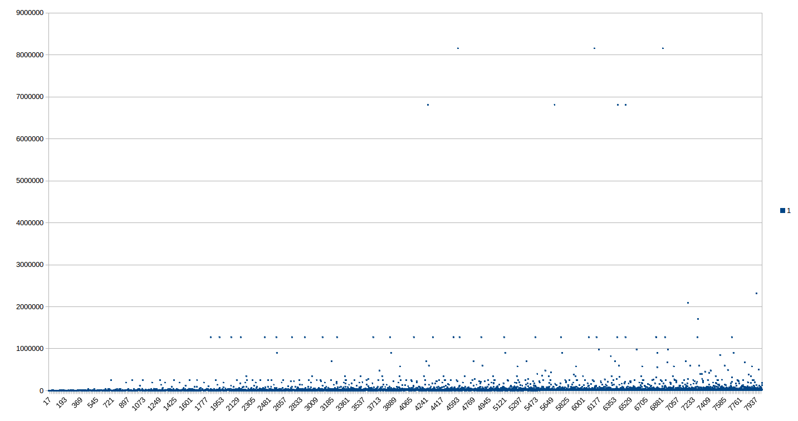

Presenation of IV122 course work
IV122 (czech ony) is 2h/week seminar/class focused on solving various programming problems related to some mathematical concepts.
Navigation
All my output for this course is in self explanatory git repository. Additional notes are in progress.
Update 1.6. 09:07 AM
Drtiva vetsina uloh je hotova a zdrojaky jsou v githubu. Tento prehled ted nestiham dodelat a syncnout se stavem zdrojaku.., jsem na jine zkousce :(.
Weaknesses and StrengthsWeaknesses
Strengths
Notes
Seminar 1 - Intro
- Práce s grafikou done

- Collatzova posloupnost done
Maximal number that appeared in collatz sequence for first 8000/200 numbers.

Stepcount to arrive to 1 in collatz sequence for first 8000/200 numbers.
-
Ulamova spirála todo interpret data as result
Ulam spiral has ugly code. Bazzilion helper variables that I wasn't able to reduce..
-
Vizializace NSD
Na obrázcích je vidět vzor, který má být, ale nějak se mi nepovedlo přeškálovat stupnici, aby to bylo dost kontrastní. Viz:
Seminar 2 - Combinatorics
- Generování kombinací, permutací, variací done
-
Pascalův trojúhelník mostly done
todo zkuste najít vstupy, které dávají zajímavý výstup.
- Přibližné umocňování *mostly done *
chybí vyhodnocení metod. Plus program nefunguje na vstupech, které produkují velké zlomky (např. 10**2.254, (coz je neco jako 10**(1127/500) to mocneni a hledani odmocniny produkuje u float cisel nekonecna...)
- Výpočet Pi mostly done
chybi analyza, metody implementovany ze zadani vsechny
Seminar 3 - Turtle graphics
- Knihovna pro želví grafiku Done
- Vykreslování relativně vs. absolutně todo E not done
- Želví grafika a fraktály *pentagon flake not done, first three done *
- Kreativita želvy something produced
:


Seminar 4 - Bitmap graphics
- Základní útvary todo fuzzy elipsis musí být rovnostranný).
- Mnohoúhelník done

- Efekty done
- Skryvacky missing
Seminar 5 - Geometric algorithms
- Průsečíky úseček Done
- Triangulace missing
- Konvexní obal done
Kod by sel jeste vic zjednodusit.
Seminar 6 - holidays => no materials
Seminar 7 - Fractals 1
- Chaos game done
- L-systémy done
- Feigenbaumův diagram done
Seminar 8 - Fractals 2
- mandelBrot done basic
- Julius done basic
- Newton todo
Seminar 9 - Linear algebra
- Afinní transformace done
- Multiple Reduction Copy Machine (MRCM) todo
Seminar 10 - Probability and statistics
- Monty Hall Problem done
- Nenáhodná čísla todo
- Centrální limitní věta todo
- Bayesova věta – kostky todo
- Linear regressiondone
not done comparing computed values with values used for generating
- Cluster detectionbuggy
First iteration looks good, points are assigned to some correct cluster centers, but as iterations progress, all points will became assigned to only one cluster...
Seminar 13 - Generating mazes
Seminar 12 - Mazes
Both without graphical output.
- Numerical mazedone
- Robot in maze (turning penalized) done
Seminar 13 - Generating mazes
-
Triangular perfect maze.
Obvious bug that can be seen from image is that line sections have gaps between them. Some rounding error somewhere probably cases this.